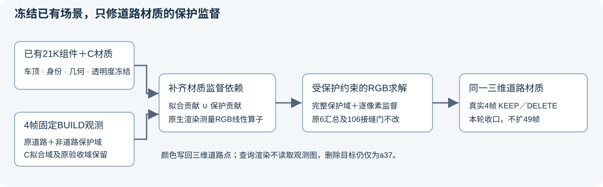
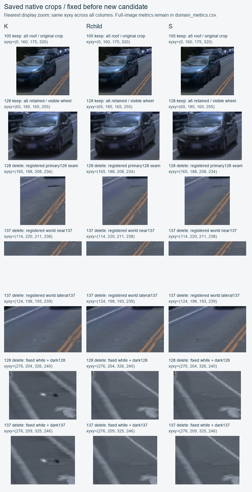
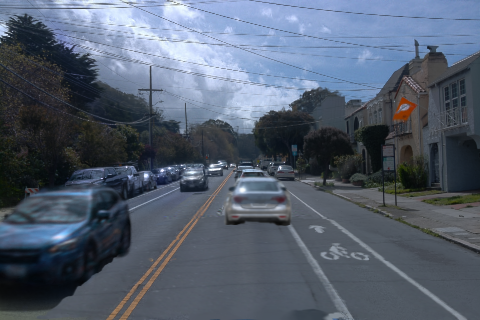
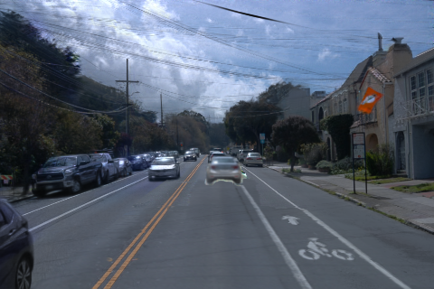

Scene008：道路材质的保护监督接口
2026-11-08 · 真实4帧094／105／128／137 · KEEP／DELETE(a37) · 按用户指令，交付验证后关机
单场景精修收口：保护监督接通，整体指标尚未全过，未扩49帧
保守归档Rchild：真实四帧白/暗点消除，原接缝像素、车顶、身份与几何保持。原94项61通过／25失败／8空域，保护RGB7/16通过；不是整体修复成功。S虽有9/16保护域通过却接缝回退，不采用。最后一次T求解未返回合法RGB颜色表，未出图。按用户要求停止单场景新实验，转入结果与接口交接。
继续使用累计21K组件的v44＋a5车顶恢复场景，以及已完成的C道路材质2K。没有端到端重训；本轮不更新车顶、车辆、身份、几何、透明度、环境或相机，仅校准道路RGB。

真实四帧结果
| 控制 | 原94：通过/失败/空域 | 保护RGB | K汇总 | K逐bin | 结论 |
|---|
| K（原对照） | 55 / 31 / 8 | 1/16 | 6/6 | 106/106 | 既有接缝改善；保护白点/暗点仍在 |
| R：父点＋接缝像素保护 | 57 / 29 / 8 | 3/16 | 6/6 | 106/106 | 修掉四处白/暗点；接缝像素与K逐值相同 |
| Rchild：独立子点＋同保护 | 61 / 25 / 8 | 7/16 | 6/6 | 106/106 | 仅放开子点颜色；全几何和身份不动 |
| S：移除额外接缝颜色锁定 | 53 / 33 / 8 | 9/16 | 0/6 | 40/106 | 保护更好，但接缝回退；不采用 |
原94包含16个既有alpha/depth失败；这些几何数值本轮始终冻结，没有把它们报成修复成功。8个a5空域仍为空域。全部4帧是BUILD开发数据，49帧也曾参与旧场景与C2K训练，不声称独立泛化。

监督接口修了什么
旧资格只有fit_mass > 0，材质损失也只读取fit_mask。道路父点在少量拟合像素中有贡献，就可能在大片未受约束的保护区改色。新接口分别保存C拟合目标与保护目标，并以正拟合贡献或正保护贡献的并集注册颜色依赖。
真实测量得到5246个父点（较旧2119增加3127），以及20725个现有子点。子点控制只解除颜色共享，没有增加或移动点。所有控制共用相同9966个受道路影响的保护像素；完整保护域分母、零贡献常数误差及原验收mask均保留。
R对4个预先登记DELETE像素的RGB MAE：128白点／邻暗点由K的0.47224／0.26106降为0.01237／0.00594；137由0.42410／0.27501降为0.00354／0.00127，四点均优于21K原值。它们只是读出坐标，训练没有逐点选择或回滚。
Rchild把整片接缝像素RGB固定在K上，但该额外限制使4个保护域的独立像素RGBbox下界已经超门。S只撤这层额外限制，显示保护误差和接缝质量需要同时验收。原用户冻结项始终不变。
接口实际数据验收 · 固定接缝颜色的必要下界 · 删除身份与监督域交集
计算账与证据边界
本轮新增神经训练0步；主线仍是累计21K＋C2K＝23K组件训练量，不是一份连续训练23K的模型。三组有真实材料图的控制合计9次有界最小二乘调用、180.635秒，均为100次外迭代上限的近似解，不冒称全局最优。
GPU测量与三组实际8F合计13051次前向＋16次特征dummy反向，0Adam更新；独立worker wall合421.289秒，包含加载、保存和IO。F不是训练步。父/子算子及三组材质的原生浮点图、颜色表、源码、合同和日志均已取回核对；原始大场景权重继续保留远端。
另有9次LP数值控制、1370.751秒，未得到可用于改进结论的认证材料点。最后一次T只保留原118接缝和16完整保护域质量约束，没有附加整片接缝RGB锁定或逐像素历史端点最小值门；单次600.053秒到时停止，RGB盒违约0.003214超过封存的1e-7数值修正上限，未clip、未导出或渲染。它也没有有效不可行证明。软件状态不作为材质能力不足的结论。T总账 · LP总账 · GPU总账
用户已要求结束单场景精修。本轮不再启动实验，不扩49、不改旧默认；human_verdict=null。五个完整GPU包187,053,125B及T另14文件7,845,363B已取回验证。Git推送和本机验收完成后由root执行AutoDL /usr/bin/shutdown，实际电源回执另存本机。
四帧完整原生图（点图打开480×320原图）
R · 105 · DELETE
Rchild · 105 · DELETES · 105 · DELETE R · 137 · DELETERchild · 137 · DELETES · 137 · DELETE
交接到多场景阶段
复用身份与删除目标分离、显式fit/protect角色、三维共享材质、可见贡献资格以及冻结模型验收。身份过滤、真实深度排序和保护域检查保持为确定性接口。待检验的学习候选是由多视图与三维上下文驱动的共享补全／融合残差；它必须在未见场景、固定适配预算下超过本轮无学习材质控制，而不是只复现单场景颜色拟合。本轮未实现、训练或评价该候选。
下一阶段边界 · 控制表 · 本机完整备份索引